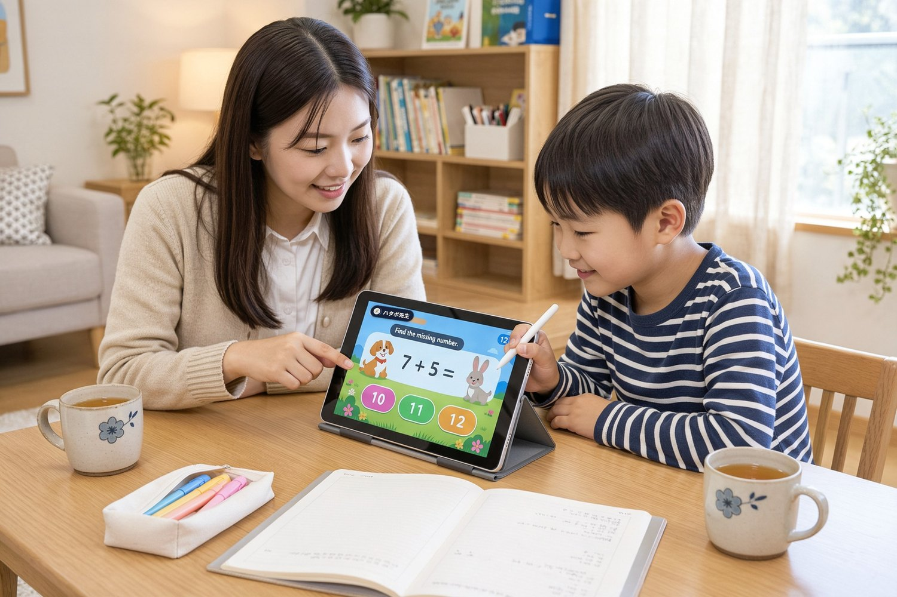

スマホとパソコンの愛棒
すべての人に、AIの愛棒を。
PCとスマホで話すだけ。あとは、ハタボが動く。家族とお店と会社のAIの愛棒。どこにでも、連れて行ける。AIの料金も伴走も、ぜんぶ月額に込み。
※公式LINEを友だち追加すると、申込相談担当のハタボが、合うプランをいっしょに選びます。サービス以外のご相談（調べもの・文章の下書き・雑談など）は、7日間のお試しで、あなた専用の愛棒にどうぞ。

見る・読む・書くから、AI時代は聞く・話すへ。
画面を開いて、読んで、打ちこむ時代から。話して、聞くだけで、仕事も暮らしも動く時代へ。人×AI×重なる力
働くハタボ。
「働」の字は、人（亻）と、重なる（重）と、力（力）。人とAIが重なると、ひとりではできなかった力になる。はたらく＝傍（はた）を楽にする、愛棒です。
TALK ／ 言霊の再生
見る・読む・書く時代から、
AI時代は聞く・話すへ。
PC・スマホは、見る・読む・書くから、聞く・話すだけで自走するAI時代へ。家でも、カフェでも、会社でも。PCとスマホで話すだけ。あとは、ハタボが動く。
言霊の再生
AI時代の原点回帰 ── 人の役割を、もう一度。
- 1PAST人類は、ずっと話して、聞いてきた火を囲み・言葉を交わし・道具をつくる。
人間にとって最も自然で根源的なコミュニケーションは、声による対話です。
- 2100 YEARS読み書きと画面の時代は、この100年だけ
文字や画面を介した情報処理は、人類の長い歴史の中では、ほんの一瞬の出来事です。
- 3NOWAIに聞き、話す時代へ原点回帰
テクノロジーの進化で、わたしたちは再び「声でやり取りする」本来の姿へ戻っていきます。
- 4HUMAN最後に「話す」のは、人
AIから情報を引き出したあと、最終的な意思を言葉にして伝えるのは、人の役割です。
- 5DECIDE決めるのは、いつだって人
どれだけAIが賢くなっても、選び、決める主体は、いつも人にあります。
デジタル化によって「見る・打つ」作業ばかりになった現代では、自分の声と呼吸を使って言葉を放つ行為そのものが、心・技・体を整える大切なスイッチになります。
- 5見る
画面を見つづけると、目がつかれ、まばたきも減りやすい。
ハタボが代わりに - 4書く
キーボードとマウスは、肩・首・手首に負担がかかりやすい。
ハタボが代わりに - 3読む
画面で読みつづけると、目と姿勢に負担がかかりやすい。
ハタボが代わりに - 2聞く
目と手を休めたまま。歩きながらでも、目を閉じても。
あなた - 1話す
声を出すと、呼吸が深くなりやすい。目も手も使わない。
あなた
これまでの仕事は、4位の書くと5位の見るが中心でした。画面を見て、キーボードを打つ毎日。
これからは、あなたは聞く・話すだけ。読む・書く・見るは、ハタボが代わりにやります。
※順位は、目・手・姿勢への負担の少なさを目安にした、ハタボの考え方です。医学的な効果を示すものではありません。
SCENES ／ シーン一覧
様々なシーンで、活用できます。
家でも、会社でも、外でも、お店でも。話すだけで、そばで働きます。


こんな場面で、AI棒が動く。

「あと1km、ペース少し上げようボー」ハタリス

「お昼のお薬、飲みましたか？」→ 家族に「元気です」ハタイエンタ（見守り報告）

「香りが好きなら、次はこちらはいかがですか」ハタエース

「配送は2日ほどです。ご予算は？」ハタエース／ハタボーラ

「明日の3件、順番はこうしようボー」ハタリス

「次は玉ねぎを炒めて。足りない物はリストに入れたボー」ハタイエンタ

「おはようございます。今日は9時からミーティングです」ハタイエンタ

「7たす5は？ ゆびで数えてみようボー」ハタイエンタ（学習モード）

「決まったことは3つ。宿題はAさんが金曜まで」ハタボーラ

「Check-in is from 3 pm」ハタエース

「Wi-Fiのパスワードと、近くの朝ごはんのお店は？」ハタエース
「この間取りなら、在宅ワークの部屋も取れます。週末の見学を予約しますか？」ハタエース／ハタボックス
「みんな寝たよ。玄関の鍵と、2階の電気も消しておくボー」ハタイエンタ
「似た業種の事例は、資料の3ページです。画面に出しますね」ハタボックス／ハタボーラ
「この先渋滞です。次のお客さんに、10分おくれると送っておくボー？」ハタボックス／ハタボーラ
「今月は材料費が少し多めです。仕入れ先を見直す案を出しますか？」ハタイエンタ／ハタボックス／ハタボーラ
写真はイメージです。
LINEUP
あなたに合うハタボを選ぶ

CALM & PASSION
どちらかを、捨てない。
すべてを、手に入れる。
NEVER CHOOSE. HAVE IT ALL.
冷静な仕組みと、情熱のこもった関係。ハタボは、仕事と暮らしの「あちら立てればこちら立たず」を、ほどいていく。
HOW IT WORKS ／ ハタボのしくみ
PCとスマホで話すだけ。あとは、ハタボが動く。
LINEやブラウザで話しかけると、ハタボが調べて、まとめて、予約や連絡まで動きます。決めるのは、いつも人。
PLAN ／ プラン・料金
安心と成長の自由設計。
型（建売）もあり、柔（注文）でもある。月々定額の月額プランに、AIの料金・設定・困ったときの伴走まで込み。お店と会社は、働いた分だけ払う成果プランも選べます。
定額で、AIの料金も伴走もぜんぶ込み。ひとりなら月額2,980円から。
OUTCOME成果プラン（案）お店・会社向け。基本料に、取れた予約や解決した問い合わせの数だけ。上限つき。
FREE TRIAL7日間無料いちばん上のZでお試し。7日以内にやめれば0円。
SIMULATION見積もりをするラインナップとグレードを選ぶと、月額の目安がすぐ出ます。


OWNERS CLUB
オーナーズクラブ AISAI・愛祭
聞くだけAIから、任せる愛棒へ。
同じAIなら、任さにゃ損。
ハタボを使う人だけの、愛が働く祭り。オーナーサポート、仲間との出会い、毎年のAI祭り（アワード）と4年に1度の祭り。
AISAIを見るセミナー・説明会 毎週水・金曜日 開催中水曜は事業主・法人の方へ、金曜はパートナーの方へ。セミナー担当のハタボが進めます。無料。
日程と申し込みFAQ
よくある質問
アプリを入れずに使えますか？
はい。PCかスマホでハタボを開くだけで始まります。LINEで書く・見るはオプションです。アプリを入れる必要はありません。パソコンでも使えます。
月額には何がふくまれますか？
AIの料金、はじめの設定（家庭・個人）、困ったときの伴走、新しいAIへの入れかえがふくまれます。
やめたら、育てたハタボはどうなりますか？
覚えたことは、ご本人がいつでも確かめて消せます。プランやラインナップを変えるときは、そのまま引きつげます。
個人情報は安全ですか？
家族やお店ごとに分けて保存し、お金や約束の前にはかならず人のOKをとります。くわしくは安心・セキュリティをご覧ください。